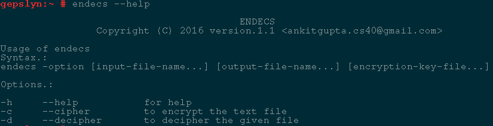
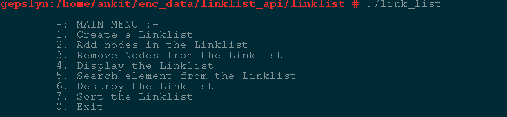
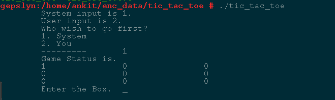
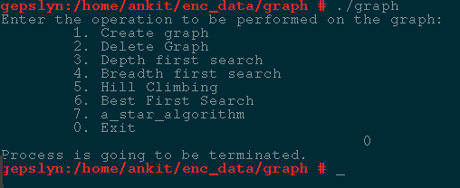
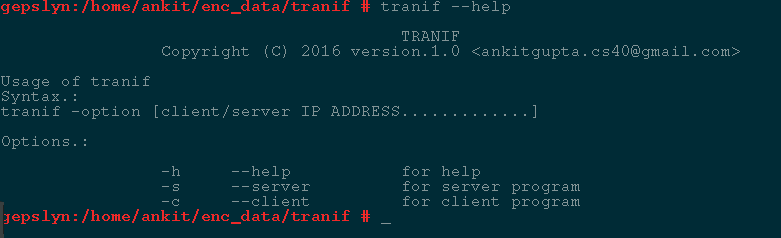
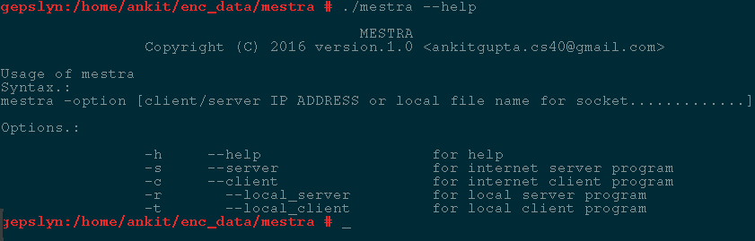

PROJECTS
Compression and Encryption tool 'ENDECS'
It is an encryption and decryption tool.
It can be used to encrypt and compress data of any text file.
Uses very fast algorithm to compress and decompress the text file.
Specially, designed for the systems having gcc compiler.
User Manual

Data Management tool using Linked lists
LIST" style=" max-width:90%; height:auto;" title="GO TO GITHUB" />
Tic-Tac-Toe (console game application for Linux)

Tool for implementing popular Artificial Intelligence Algorithms using GRAPH in Linux
A Linux console application.
Graph has been used.
Following algorithms has been implemented
Depth-first Search
Breadth-First Search
Hill Climbing
Simple Hill Climbing
Simulated Annealing
Steepest Ascent Hill Climbing
A* Algorithm
Best First Search

File transfer application 'TRANIF' using Berkeley Sockets
It is a Linux console application.
Berkeley Socket has been used in this application.
The port number is 9784.
User Manual

MESTRA(Console chat application using socket)
